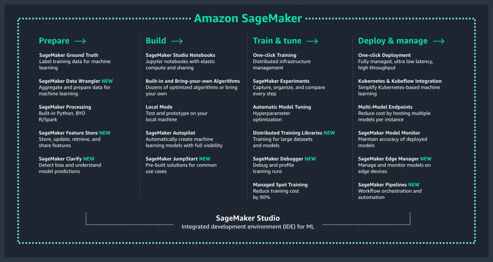
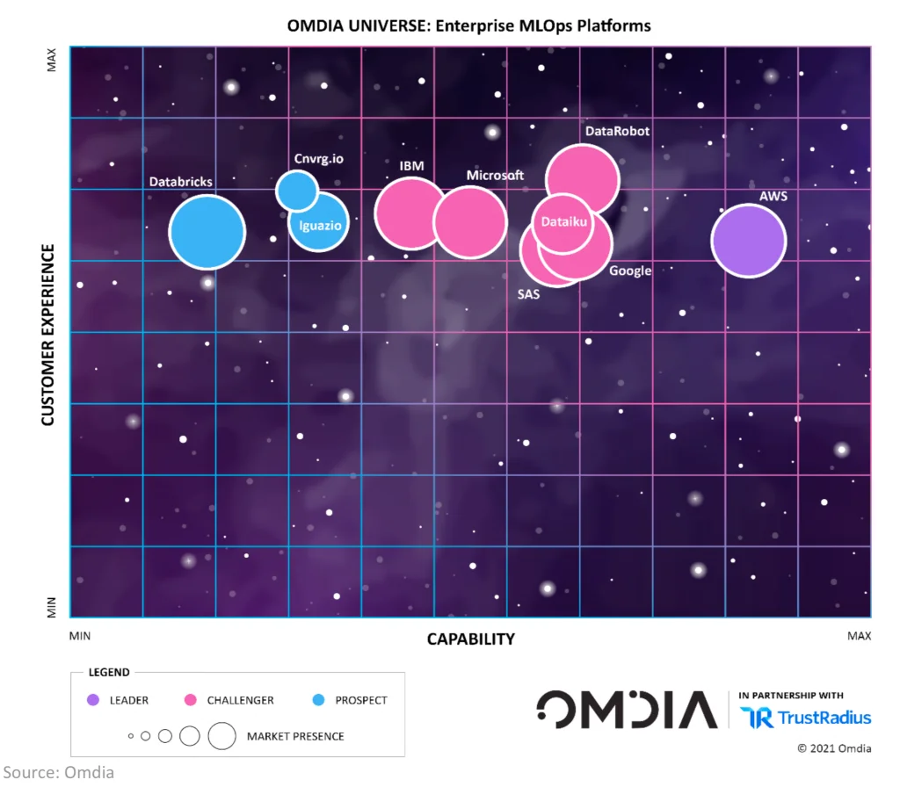

Published: 2021-06-09
Originally published at https://aws.amazon.com/blogs/aws/amazon-sagemaker-named-as-the-outright-leader-in-enterprise-mlops-platforms/
Over the last few years, Machine Learning (ML) has proven its worth in helping organizations increase efficiency and foster innovation. As ML matures, the focus naturally shifts from experimentation to production. ML processes need to be streamlined, standardized, and automated to build, train, deploy, and manage models in a consistent and reliable way. Perennial IT concerns such as security, high availability, scaling, monitoring, and automation also become critical. Great ML models are not going to do much good if they can’t serve fast and accurate predictions to business applications, 24/7 and at any scale.
In November 2017, we launched Amazon SageMaker to help ML Engineers and Data Scientists not only build the best models, but also operate them efficiently. Striving to give our customers the most comprehensive service, we’ve since then added hundreds of features covering every step of the ML lifecycle, such as data labeling, data preparation, feature engineering, bias detection, AutoML, training, tuning, hosting, explainability, monitoring, and automation. We’ve also integrated these features in our web-based development environment, Amazon SageMaker Studio .

Thanks to the extensive ML capabilities available in SageMaker , tens of thousands of AWS customers across all industry segments have adopted ML to accelerate business processes, create innovative user experiences, improve revenue, and reduce costs. Examples include Engie (energy), Deliveroo (food delivery), SNCF (railways), Nerdwallet (financial services), Autodesk (computer-aided design), Formula 1 (auto racing), as well as our very own Amazon Fulfillment Technologies and Amazon Robotics .
Today, we’re happy to announce that in his latest report on Enterprise MLOps Platforms, Bradley Shimmin , Chief Analyst at Omdia , paid SageMaker this compliment: “ AWS is the outright leader in the Omdia comparative review of enterprise MLOps platforms. Across almost every measure, the company significantly outscored its rivals, delivering consistent value across the entire ML lifecycle. AWS delivers highly differentiated functionality that targets highly impactful areas of concern for enterprise AI practitioners seeking to not just operationalize but also scale AI across the business. ”

You can download the full report to learn more.
Getting Started
Curious about
Amazon SageMaker
? The
developer guide
will show you how to set it up and start running your notebooks in minutes.
As always, we look forward to your feedback. You can send it through your usual AWS Support contacts or post it on the AWS Forum for Amazon SageMaker.
- Julien